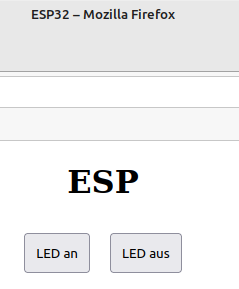

Kopiere folgende Codezeilen in dein Programm:
String htmlText() {
String txt;
txt = "<!DOCTYPE html><html><head><title>ESP32</title>";
txt=txt+"<style>body{text-align:center;}button{margin:10px;padding:10px}</style>";
txt=txt+"</head><body>";
txt = txt + "<h1>ESP</h1>";
txt = txt + "</body></html>";
Serial.println(txt);
return txt;
}
Der ESP32 stellt als Webserver eine HTML-Seite dar.
Die Funktion htmlText erzeugt den HTML-Code, der auf dieser Seite angezeigt wird.
Bisher besteht diese Seite nur aus einer Überschrift.
Erstelle eine Methode startSeite() mit der der HTML-Code angezeigt wird:
void startSeite() {
server.send(200, "text/html", htmlText());
}
Der Server sendet zwei Dinge:
Füge in der loop()-Methode folgende Zeile ein:
server.handleClient();
Der Server verarbeitet jetzt Anfragen von Clients, wie zum Beispiel dem Internetbrowser, mit dem du die Seite aufrufst.
Füge in der setup-Methode folgende Anweisung vor der server.begin();-Zeile ein:
server.on("/", startSeite);
Wenn die IP-Adresse des ESP ohne weitere Zusätze vom Browser aufgerufen wird, startet der ESP jetzt die Methode startSeite. Er stellt unsere Webseite dar.
Starte einen Internetbrowser und tippe in die Adresszeile die IP-Adresse ein, die den ESP bei der Anmeldung erhalten hat. Der Browser müsste jetzt eine Seite darstellen, auf der nur die Überschrift ESP steht.
Füge nach der Zeile
txt = txt + "<h1>ESP</h1>";
folgende Zeilen in die htmlText-Methode ein:
txt = txt + "<a href=\"/an\">";
txt = txt + "<button>LED an</button>";
txt = txt + "</a>";
txt = txt + "<a href=\"/aus\">";
txt = txt + "<button>LED aus</button>";
txt = txt + "</a>";
Wenn du die IP-Adresse des ESP jetzt im Browser aufrufst, werden zwei Buttons mit den Beschriftungen LED an und LED aus dargestellt:

Beim Klicken auf die Buttons werden die Unterseiten /an bzw. /aus augerufen.
Jetzt musst du nur den ESP auf diese Unterseiten reagieren lassen.
Füge hierzu folgende Zeilen in die setup()-Methode ein:
server.on("/an", ledAn);
server.on("/aus", ledAus);
Wenn die IP-Adresse des ESP mit dem Zusatz /an aufgerufen wird, startet der ESP die Methode LEDAn, die wir noch programmieren müssen. Der Zusatz /aus soll die entsprechende Methode ledAus starten.